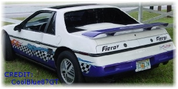

Does it never end? To makje a loooonnngggg soty short a lady pulled out from an intersection and wasted my sweat Fiero- her insuance has givin me $2600US and some change for what was left ot it. Ok so it wasn't a bad wreck but the Fiero wouldn't drive much more :( O well here's the story if you care: Anotherone bits the dust.
Unfortently this means I have to get another vehical, and so far it doesn't look it'll be a Fiero. But when and if I ever get another Fiero I'll update this site about my new Fiero adventures. Till next time...
Its not done but what the hell right? Take a look around, tell me what you like, dont like, what you think could be done better, what I could do without and all the bug reports you can file in 24Hrs.
12/11/2k1 - Alright! update time! Not much just some link to other people's Fiero sites (in the 'Stuff' section)and the lastest repair/re-repair.
Over in the 'Stuff' section is where you can get ahold of me, or on the PFF (username pheagey). Cool, Peace out.
12/2/2k1 | Update: I took out the submenu's till I can figure out WTf is with them messing the position up. Also did a lil image compressing for those unlucky 56k souls who wounder in here.
If you r interested in reading a nice story about my Fiero getting robbed, twice, check it all out here:My f!@cked up weekend and the plot thickens. And my final report on the whole thing HERE.
